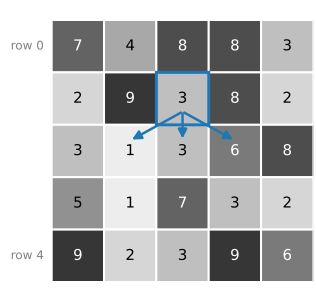
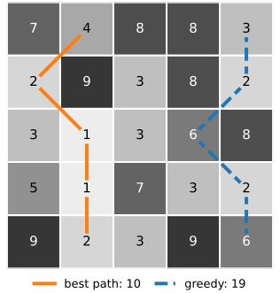
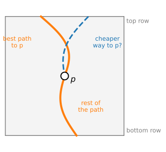
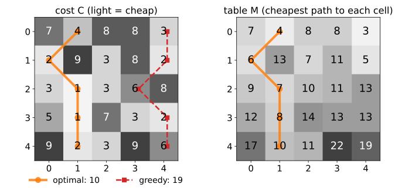
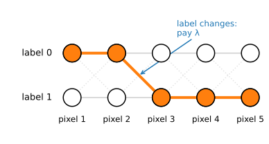
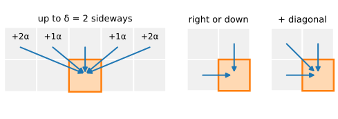
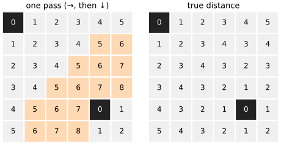
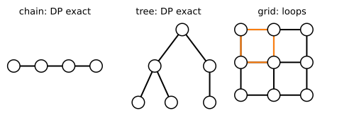

Many image problems ask for the cheapest path: a boundary along dark pixels, a seam through an image, an alignment of two signals. There are far too many paths to try them all. Dynamic programming (DP) finds the best one exactly, with a table and a few additions.
The question: the cheapest path from the top row to the bottom row of a cost image.
Why trying all paths fails, and why the greedy choice fails.
The key idea: an optimal path is made of optimal sub-paths.
Fill a table row by row, then backtrack to read off the path.
The general recipe, and two old friends that are the same recursion: the two-label chain of the graph-cut day and the distance transform.
Slides titled The math give the formulas and proofs; the ideas are complete without them.
A small cost image: each pixel has a cost (light = cheap). Find the cheapest path from the top row to the bottom row that moves one row down per step, one column left, straight or right (the three blue arrows).
The cost of a path is the sum of its five pixels.
Try to guess the best path before the next slide.

Why not try all paths?
From each pixel there are 3 ways down (2 at the image border). A path through n rows has n - 1 steps, so there are about m \cdot 3^{n-1} paths in an image with m columns.
5 \times 5: 259 paths (405 without the border effect). Still possible by hand, barely.
100 \times 100: about 1.5 \cdot 10^{49} paths.
256 \times 256: about 10^{124} paths, more than the roughly 10^{80} atoms in the observable universe.
Trying them all is hopeless. We need a way to reuse work: the paths overlap almost everywhere.
Greedy fails
The obvious shortcut: start at the cheapest pixel of the top row and always step to the cheapest of the three pixels below.
In the example: start at 3 (top right), then 2, 6, 2, 6: 19.
The best path costs 10: 4, 2, 1, 1, 2. Its first pixel (4) is not the cheapest one.
A cheap first step can lead into an expensive region. To decide the first step well, we must know what comes later. Dynamic programming turns this around: it works out the best way to reach every pixel, so no decision is made too early.

The key idea: optimal sub-paths
Suppose the best path to the bottom passes through pixel p. Then its part from the top to p must be the best path to p: if there were a cheaper way to reach p (dashed), we could swap it in and get a cheaper path to the bottom.
So we only ever need to remember one number per pixel:
M(p) = the cost of the cheapest path from the top row to p.
and, for pixel p in row i, it is known as soon as row i - 1 is known:
M(p) = cost of p + the smallest M among the (up to) three pixels above it.
This is Bellman’s principle of optimality (1957).

The math: the Bellman recursion
Cost image C(i, j), rows i = 0, \dots, n-1, columns j = 0, \dots, m-1. A path is j_0, j_1, \dots, j_{n-1} with |j_{i} - j_{i-1}| \le 1, cost \sum_i C(i, j_i).
with M = \infty outside the image. Store the minimising d as a pointerB(i, j). The optimal cost is \min_j M(n-1, j); the path follows the pointers back from that cell.
Why it is correct (by induction on i): every path to (i, j) comes from one of the three cells above, and its cost is C(i, j) plus the cost of its part up to row i - 1, which is at least M(i-1, j+d). The recursion takes the best of these lower bounds, and it is reached by extending the optimal path to that cell.
Filling the table, then backtracking

Row 0 of M copies the costs. Row 1: M(1,0) = 2 + \min(7, 4) = 6; M(1,1) = 9 + \min(7, 4, 8) = 13; …
Each cell also remembers which cell above gave the minimum: a pointer.
At the end, the smallest M in the last row is 10. Follow the pointers back up: columns 1, 0, 1, 1, 1.
Try it: the table step by step
What it costs
Each cell looks at (at most) 3 cells above: one addition and one comparison each. An n \times m image needs about 3nm operations.
5 \times 5: 52 operations instead of 259 paths. 256 \times 256: about 195 000 operations instead of 10^{124} paths.
Memory: the whole table and the pointers to recover the path; if only the cost is wanted, the previous row is enough.
The trick is the overlap: the cheapest way to each pixel is computed once and reused by every path that continues from it.
The math: counting paths and operations
Let N(i, j) be the number of paths from row 0 to (i, j). Then N(0, j) = 1 and N(i, j) = \sum_{d} N(i-1, j+d): the same recursion with (+, \text{sum}) in place of (+, \min).
Every cell has between 2 and 3 cells above it (for m \ge 2), so m \cdot 2^{n-1} \le \sum_j N(n-1, j) \le m \cdot 3^{n-1}: exponential in n.
The table needs one candidate per (cell, step): (n-1)(3m - 2) evaluations (the two border cells of each row have 2 candidates). Linear in the number of pixels.
With 2\delta + 1 allowed steps instead of 3: O(nm\delta) work, about m(2\delta+1)^{n-1} paths.
The recipe
Dynamic programming in four steps:
Stages and states: here the rows are the stages and the column of the path is the state.
A recursion: the best value of a state from the best values of the previous stage.
An order in which every right-hand side is known before it is needed: here, row by row.
Backtracking: store where each minimum came from, and follow it back from the best final state.
Step 3 is the condition that matters later: if no such order exists, plain DP does not work (the live-wire unit).
Same recursion, other states: the two-label chain
Recall from the graph-cut day (unit Segmentation as energy minimisation): the best labelling of a 1D profile, E(L) = \sum_p D_p(L_p) + \lambda\,\#\{p : L_p \ne L_{p+1}\}, solved exactly by DP.
Stage = pixel p, state = its label 0 or 1. The table has two numbers per pixel.
Transition cost\lambda when the label changes: a “path” through a 2-column grid with a step penalty.
This is the Viterbi algorithm; the same idea decodes signals and aligns speech.

Try it: the two-label chain
Same recursion, other steps
The recursion does not care what the steps are, as long as each one goes back in the filling order.
One row down, up to \delta columns sideways, with a penalty \alpha |d| for a step of d columns: smoother paths. The next unit uses this for closed boundaries.
Right or down (top-left to bottom-right): M(i, j) = C(i, j) + \min\big(M(i-1, j),\ M(i, j-1)\big). Fill row by row, left to right. In the demo: moves → ↓. Adding the diagonal step gives the table used to align two signals (dynamic time warping).
Seams through an image (seam carving) are the ↙↓↘ case on an energy image.
Matching two image rows pixel by pixel (scanline stereo) is the same table: stereo, day 49.

Same recursion, other order: the distance transform
Recall from the morphology day: the two-pass (chamfer) distance transform. Its first pass is
in raster order: a Bellman recursion where the “previous stage” is the pixel above and the pixel to the left.
One pass is not enough: a pixel whose nearest background lies below or to the right gets the wrong value (shaded). A second pass in the opposite order fixes this case.

So what happens when the best path may go up, down, left and right, and no fixed order works at all? That is the live-wire unit: let the algorithm discover the order.
When is DP exact?

DP is exact when the problem is a chain (one state per stage, each stage talks only to the next) or a tree, so that there is an order in which everything needed is already known.
A 2D labelling with neighbours in both directions is not a chain: the grid has loops. The graph-cut day solves binary 2D labellings exactly in another way (max-flow, for submodular energies).
A boundary that can be written as one value per stage (one column per row, one radius per angle) is a chain, so DP finds the global optimum, however many local minima the image has.
Summary
The cheapest path through a cost image cannot be found by trying all paths (\sim 10^{124} for 256 \times 256) or greedily.
Principle of optimality: the best path to the end is made of best paths to its intermediate pixels.
Fill the table M = cost + the smallest M above, row by row; store pointers; backtrack from the best final cell.
About 3nm operations, exact.
The recipe (stages, states, recursion, order, backtracking) also gives the two-label chain (Viterbi) and the passes of the distance transform.